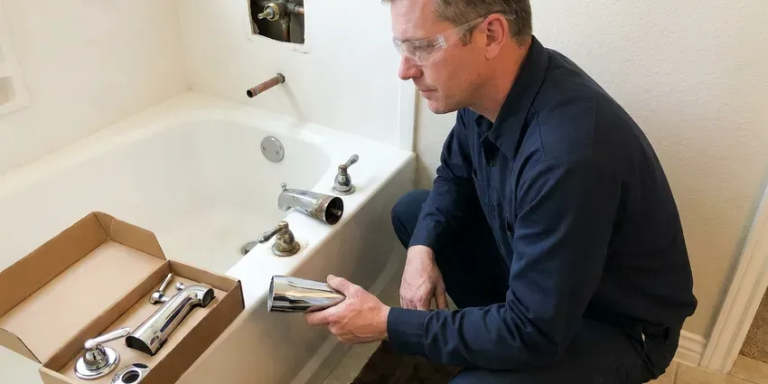

Shower Installation in Wahpeton, ND
New build or gut remodel in Wahpeton, ND, the shower plumbing has to be right before tile. HPN Plumbing sets valve depth to your finished wall.
- Remodel-Friendly Scheduling
- Licensed and Insured
- Valves Set to Finished Depth
- Pans Flood-Tested

Shower Installation Done Before the Tile, Wahpeton, ND
Not sure where the valve goes? We help you place the valve and controls.
Valves, Pans and Drains for New Showers in Wahpeton, ND
HPN Plumbing installs the plumbing for new showers, including valves, supply lines, arms, body sprays, pans and drains. Each piece goes in at the correct height and depth, and the system gets pressure-tested before tile. Hidden leaks are expensive. That test is cheap insurance.
Some of what we do:
- Linear and Curbless Shower Drains on Slab
- Valve Rough-In for Every Shower Type
- All Major Valve and Fixture Brands

Additional Bathroom Plumbing Services in Wahpeton, ND
From toilets to showers, our bathroom plumbing team in Wahpeton, ND repairs, installs, and replaces every fixture with clean, code-compliant work.


Customers
Why Choose HPN Plumbing for Shower Installation in Wahpeton, ND?
We work closely with tile setters and contractors. A short talk with the tile setter about depth and drain height before rough-in prevents most of the problems we see. It takes five minutes.
- Permits Handled, We pull permits and schedule inspections when required.
- Correct Slope, Pans and drains are set so nothing puddles toward the drain.
- Local Knowledge, Our plumbers know the common bathroom layouts in Wahpeton homes.
Citywide Coverage
From the edge of Wahpeton to downtown, we keep remodels moving. Our trucks carry the common valve bodies, drains and fittings, so most rough-ins happen in one visit without a run to the supply house. Trim is a short visit.
Experienced Team
We have installed curbless showers, steam showers and multi-head systems with body sprays. Having done the hard ones, we know the problems that come up and plan around them. We plan ahead.
Safety-First Approach
Every shower we install meets North Dakota plumbing code. That covers valve type, drain size, trap setup and venting, and we schedule the inspections so the work is signed off before walls close. Sign-off matters at resale.
Trusted Certified Wahpeton Plumbing Services Professionals
At HPN Plumbing, we are proud to offer certified plumbing services throughout Wahpeton, ND. Those papers on the wall mean something. Our plumbers hold recognized industry credentials, and they follow strict safety and quality rules on every repair, installation and maintenance call we run.
Call Us Now PHCC Plumbing Contractor Recognition
PHCC Plumbing Contractor Recognition Better Business Bureau (BBB) Accreditation
Better Business Bureau (BBB) Accreditation Angi Certified Pro
Angi Certified Pro ISO 9001 Quality Management Certification
ISO 9001 Quality Management CertificationHow We Install Showers in Wahpeton, ND
Emergency Shower Replacement in Wahpeton
A cracked pan or a failed valve can force a replacement fast. If water is reaching the subfloor or the ceiling below, we remove the old unit and set a standard stall to get the bathroom working quickly. Custom work can wait. We check the framing before the new unit goes in.

Emergency Shower System Replacement in Wahpeton, ND
Water under a failed pan can rot a wood subfloor in a season. When a pan is cracked or a valve is leaking into the framing, we pull the damaged shower, check the joists and subfloor and install a new unit as quickly as the framing allows. Dry framing first. After that, the new unit goes in.
New Construction Shower Installation in Wahpeton, ND
New homes get their shower plumbing during framing. Valves, supplies and drains go in at framing, with valve depth matched to the finish and drains set for your pan. Inspection comes next. We return for trim after tile.
Steam Shower Plumbing in Wahpeton
Steam showers need four things: a generator, a water supply, a drain line and an electrical circuit. The generator goes within the maker's distance limit, and we plumb its supply, drain and steam line to the head. The circuit is an electrician's job. The enclosure needs a sealed door and a sloped ceiling.
Custom Shower Enclosure Plumbing in Wahpeton
Body sprays and steam units add lines and planning. Each spray needs its own supply, and the valve, the diverter and the pipe sizing all have to work together so the last spray in the line still gets decent pressure. Pressure varies by house. We test static pressure before designing the layout.
Curbless Shower Installation in Wahpeton
Curbless showers need the floor lowered in the shower area. A wood floor gets dropped joists or a recessed pan, while a slab gets cut and lowered so the floor flows straight in. Linear drains help a lot. Slope and waterproofing get planned before demo.
Digital Shower Systems in Wahpeton, ND
Digital shower systems like U by Moen and Kohler DTV need a little more planning. These valves usually sit in a nearby closet or vanity and need low-voltage wiring to the controller and an outlet close by. An electrician handles the outlet. We plumb the valve and outlets.

Prefab Shower Unit Installation in Wahpeton, ND
Prefab units are the fastest route to a new shower. The base goes on mortar, the drain and valve get connected and the walls are fastened so they stay rigid. Good for rentals and guest baths. Most installs finish in a day.
Local Shower Installation Near Me, Wahpeton, ND
On a remodel, we show up when we say we will. Pricing is clear, testing happens before walls close and our guarantee covers the work. We clean up each day.
Homes around Wahpeton range from older houses with unusual plumbing to new builds with PEX manifolds. We have adapters and fittings for copper, CPVC, PEX and cast iron drains, so tying a new shower into old plumbing rarely holds up the job. We check the old drain first.
HPN Plumbing at a Glance
- Fully licensed plumbing team covering Wahpeton, ND
- Same-day appointments and 24/7 emergency response
- Upfront, flat-rate pricing before work begins
- 4.9-star rated by 408+ North Dakota customers
Wahpeton Map
Wahpeton Information
- Population
- 8,000
- Area codes
- Local
- Service area
- Wahpeton and towns within a 40 mile drive
- Nearby
- Horace, Fargo, West Fargo, Valley City
Water softeners and filters are popular around Wahpeton because they extend the life of water heaters, dishwashers and faucets. Frost heave can shift soil around sewer lines and crack joints, which often shows up as slow drains or backups. That is why every valve gets a pressure test and every pan a flood test before tile goes on in Wahpeton, ND.
Expert Services
Reach out to HPN Plumbing for reliable plumbing work done by licensed pros in Wahpeton, ND.
Our Specialized Plumbing Services in Wahpeton, ND
At HPN Plumbing, you get every kind of plumbing service from one company across Wahpeton, ND. We go from leak detection all the way to full system installations, for homes and commercial buildings, and we do it quickly at a fair price. Take a look at our core services below:


Our Shower Install Sequence in Wahpeton, ND
We start with the layout, then the rough-in and the tests.
Talk Through the Plan
Call HPN Plumbing at (701) 403-1348 to talk about your shower. We gather the basics and book a site visit.
Measure and Quote
Our plumber visits to measure the space at your Wahpeton home and confirms valve type and drain location. You get a flat quote.
Rough In and Test
We set the valve, supplies and drain to code and test it all before the walls go up.
Frequently Asked Questions About Shower Installation in Wahpeton
Shower plumbing for a remodel, including valve, drain and trim, usually costs $1,200 to $3,500. A complete walk-in with tile and glass can reach $8,000 to $20,000, though the plumbing is a small part of that. Prefab units cost less.
One to two days for a standard stall. Tiled walk-ins and showers that need rerouted plumbing often take three to five days, or more with slab work. We give you a timeline up front.
Large rain heads and multiple outlets use more hot water. We look at the heater's size and recovery rate and tell you if it needs an upgrade.
Small bathrooms are where shower choice matters most. Corner units and neo-angle stalls fit tight spaces, and a custom shower with a slider can work where a tub will not. Measurements decide it.
Labor and materials are both covered. Our workmanship warranty is spelled out in your agreement, and the fixtures have their own maker's warranties. Keep the paperwork.
Usually yes. New showers and relocated drains generally require a permit and a rough-in inspection before the walls go up. The paperwork is on us.
Kohler, Moen, Delta, American Standard and Sterling are what we install most. Any brand you prefer is fine, or we can suggest a few based on budget and features. Availability matters too.
Valves and fixtures carry manufacturer warranties, many lifetime for the original owner. Our workmanship is guaranteed too.
What People Are Saying About Our Plumbing Experts?

Megan L.
Our upstairs tub drained so slowly that every shower turned into a bath. HPN Plumbing pulled a wad of hair out of the stopper and then snaked the line past the trap. Three months later it still drains fast.
Drain Cleaning · Wahpeton, ND
Carlos V.
Our house still had galvanized pipe, and upstairs the shower was a trickle. The crew repiped everything in PEX over three days and patched every drywall hole before they left. The pressure difference is night and day.
Repiping · Wahpeton, NDEmily R.
The shutoff valve under our kitchen sink snapped off in my hand on a Sunday morning. HPN Plumbing had someone out by early afternoon. He replaced both angle stops with quarter turn valves and showed me where our main shutoff was, which I honestly did not know.
Plumbing Repair · Wahpeton, NDTyler J.
We bought a taller comfort height toilet for my dad, who just had knee surgery. The plumber pulled the old one, found the flange was cracked, and replaced it before setting the new bowl. Took about two hours.
Toilet Installation · Horace, ND
Paul B.
Our pit pump ran nonstop even in dry weather. The plumber found the check valve was stuck open, so the same water kept cycling back into the pit. New valve, new float switch, done in an hour. It runs quiet now.
Sump Pump · Grand Forks, ND
Robert G.
The camera showed a full break in our clay sewer line near the street. HPN Plumbing replaced it with a trenchless pipe burst, so the only digging was two small pits in the yard. They let us watch the footage before and after.
Sewer Line Replacement · Valley City, ND